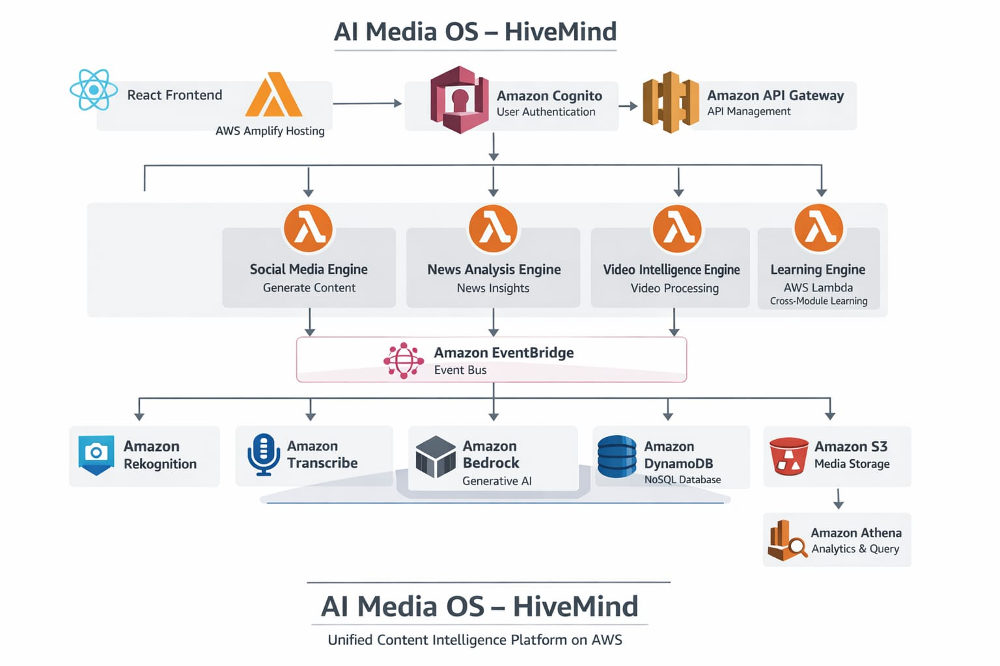
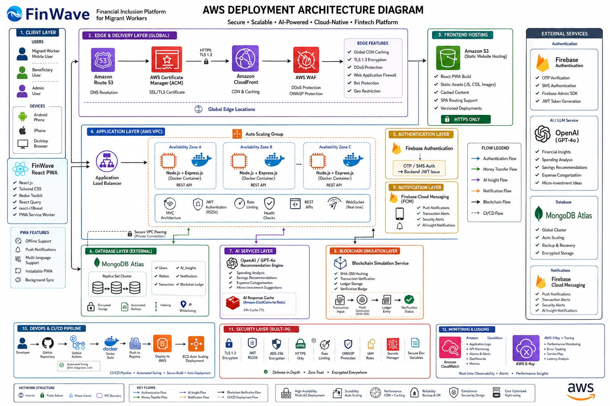
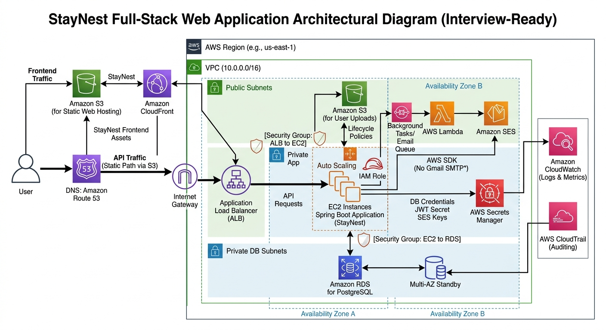

Building Cloud Infrastructure
with Automation & Reliability
Sahas Nagar · AWS, Docker, Linux, CI/CD
Building cloud-native systems, automated deployments, containerized applications, and infrastructure automation using AWS, Docker, Linux, and CI/CD workflows.
Infrastructure Automation
Automating AWS resource provisioning and operational workflows using Python and Boto3.
Containerized Deployments
Deploying applications consistently across environments using Docker and container orchestration.
Production Delivery
Deploying and maintaining cloud-hosted applications with secure configurations and CI workflows.



- Containerized application components using Docker for consistent deployment across development, staging, and production environments
- Collaborated on infrastructure setup and deployment environment configuration for AI-powered platform features
- Contributed to deployment workflows ensuring reliable application delivery across environments
- Deployed full-stack application on Render with automated Git-based deployment workflows and environment configuration management
- Configured production environment variables, database connection strings, and build settings for reliable application hosting
- Collaborated in a 4-member team using Git feature branching, pull requests, and code review workflows
- Configured VLANs for network segmentation and traffic isolation — foundational knowledge for VPC and subnet design in cloud environments
- Implemented OSPF routing protocols for dynamic route advertisement and network convergence
- Applied subnetting and IP addressing schemes — directly applicable to cloud VPC architecture, CIDR block planning, and network ACL configuration
Cloud Infrastructure
Designing and managing cloud resources including VPC architectures, IAM policies, EC2 compute, and S3 storage with security and cost optimization considerations.
Deployment Pipelines
Building CI/CD workflows with Git, automated testing, container builds, and deployment automation for reliable and repeatable releases.
Observability
Implementing logging, metrics, and monitoring strategies to ensure system reliability, performance tracking, and incident response readiness.
Networking
Understanding of routing protocols, network segmentation, subnetting, and cloud networking concepts essential for designing secure and scalable infrastructure.